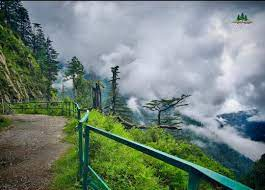
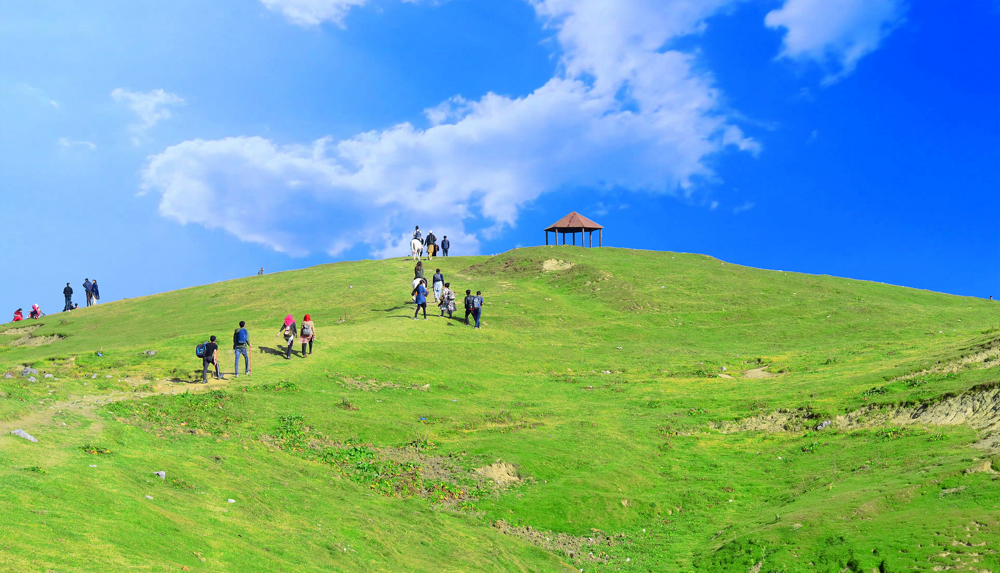
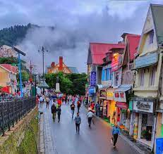

Explore The Beautiful Places To Visit in GALYAT!

Nathia Gali :
Nathia gali is a really pretty place in Galyat, Pakistan. It's like a quiet retreat with lots of green forests and cool air. The Governor's House sits on top, making the whole area look like a fairy tale.
You can walk around, enjoy nature, and feel the calmness of Nathiagali—it's like a peaceful hideaway in the mountains. You can walk around, enjoy nature, and feel the calmness of Nathia gali. it's like a peaceful hideaway in the mountains.

Mashkpuri Top :
Mushkpuri Top is like the king of hills in Galyat, Pakistan. It's a bit of a climb, but when you get to the top, wow! The view is like a giant painting of mountains and trees. You feel like you're on top of the world, and it's super cool. Mushkpuri is the place to be if you love amazing views and a bit of adventure.

Samandar kata lake :
The Beauty of Galyat's Lake is really unparallel! I have visited recently Samandar Kata Lake, which is stunning with its clear blue water and surrounded by green hills.The reflections of the mountains in the lake make it look like a beautiful painting. It's a peaceful spot where you can enjoy nature's beauty and take in the calmness of the lake. At Samandar kata Lake, you can ride boats and feel the soft wind. If you like sitting by the water, there are comfy chairs in the shallow parts of the lake, so you can enjoy the fun of beautiful lake in great weather.

Ayubia :
Ayubia in Galyat, Pakistan, is super cool! There's a fun chair lift that takes you up high, letting you see everything below like a bird. If you're into walking and exploring, Ayubia has hiking tracks that wind through the mountains and forests. It's like a big adventure park surrounded by trees and filled with fresh air. Perfect for those who love excitement and being outdoors

Murree :
Murree is a fantastic place in Pakistan with lots of hills and cool weather. It's like a colorful town with busy streets and shops selling interesting things. The Mall Road is a famous place where you can walk, eat ice cream, and buy souvenirs. In winter, Murree gets covered in snow, making it look like a winter wonderland. It's a great spot for families and friends to have fun and enjoy the beauty of the mountains.